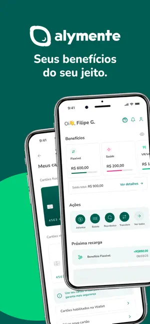
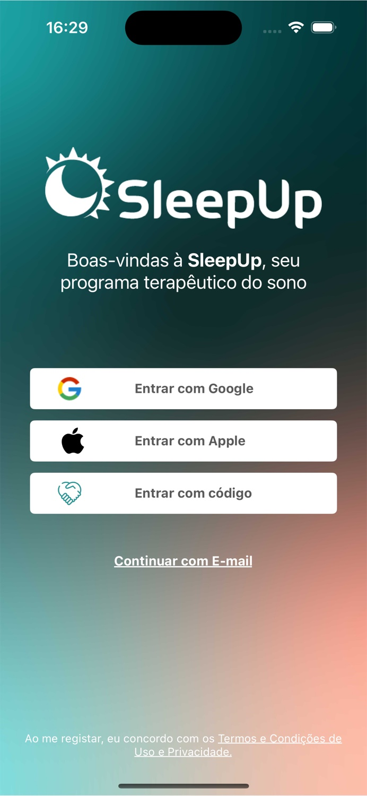
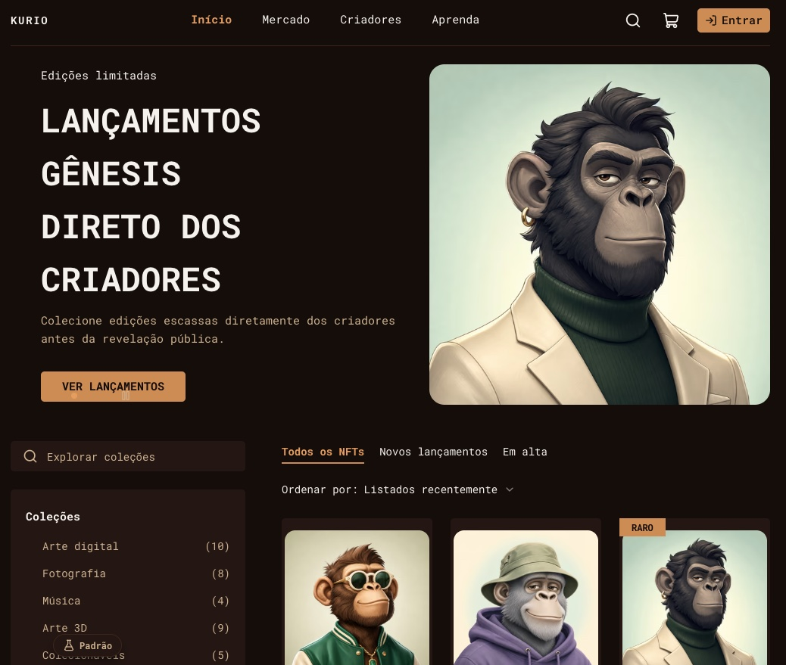
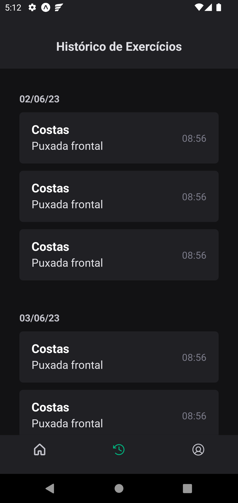

● Em produção
aly.

IOS · ANDROID
Alymente
App de benefícios corporativos. Trabalhei na arquitetura do app, na integração com Apple Wallet, nas notificações com OneSignal e na publicação com EAS.
FRONT-END & MOBILE DEVELOPER
Desenvolvo apps para iOS e Android e interfaces web com React Native, Expo e TypeScript. Tenho mais de cinco anos de experiência em desenvolvimento de software.
PORTFÓLIO

IOS · ANDROID
App de benefícios corporativos. Trabalhei na arquitetura do app, na integração com Apple Wallet, nas notificações com OneSignal e na publicação com EAS.

IOS · ANDROID
Aplicativo de saúde do sono com diário, conteúdos guiados e programas de acompanhamento.

REACT · TYPESCRIPT · VITE
Marketplace experimental de NFTs com catálogo, favoritos, carrinho e checkout com carteira simulada. Usa MSW e Socket.IO para simular API e eventos no navegador.

REACT NATIVE · EXPO
App de academia com navegação mobile, integração com API e autenticação JWT.
CURRÍCULO
Front-end / Mobile Developer
Arquitetura mobile, integração com Apple Wallet e publicação de builds com EAS.
Front-end / Mobile Developer
Desenvolvimento de CRM mobile com React Native, componentes reutilizáveis e APIs REST.
Front-end Developer
Interfaces web e mobile com React e Next.js, integrações REST e observabilidade com Crashlytics e Sentry.
Front-end / Mobile Developer
Apps iOS e Android com autenticação social, geolocalização e automação de builds.
Front-end Developer
Produto de saúde digital para web e mobile. Orientação técnica de quatro desenvolvedores front-end.
Front-end Developer
Manutenção de sistemas web, protótipos em React e integração de pagamentos.
FORMAÇÃO
Unoeste · 2019
Rocketseat · Full Stack Mobile Bootcamp (2020) e Ignite (2023–2024)